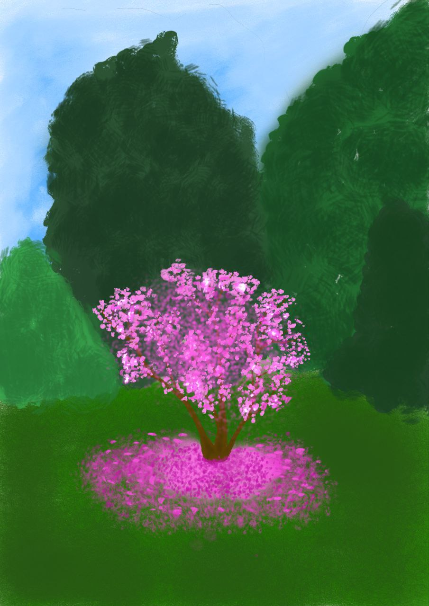

Дика вишня
У Вінницькій області дикі вишні зустрічаються, хоч і в незначній кількості. Ці дерева зазвичай ростуть на узліссях та у лісосмугах, де вони краще розвиваються в більш відкритих і менш густих місцевостях. Незважаючи на те, що дикі вишні зазвичай менш урожайні, ніж культурні сорти, їхні плоди все ж мають кулінарну цінність. Кислуваті ягоди часто використовують для приготування традиційного варення, компотів та інших домашніх страв, додаючи унікальний смак до місцевих рецептів. Незважаючи на скромний урожай, дикі вишні сприяють біорізноманіттю регіону та дарують можливість відчути неповторний смак дарів природи.